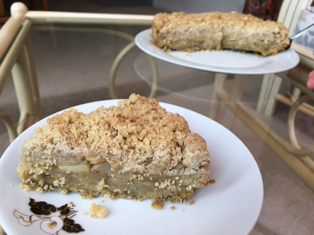

Apple Crumble-Cake
Ingredients:
-
3/4 Cup of All-Purpose Flour
-
1/4 Cup of Granulated Sugar
-
1 tsp of Baking Powder
-
3/4 tsp of Cinnamon
-
1/8 tsp of Baking Soda
-
1/8 tsp of Salt
-
1/4 Cup + 2 tbsp of Plant-Based Milk mixed with 1/2 tsp of Apple Cider Vinegar or Lemon Juice
-
3/4 tsp of Vanilla Extract
-
1/4 cup + 2 tsp of Vegetable or Canola Oil
-
1 Flax Egg
-
2 to 3 Medium Apples - Washed, Peeled, Cored and Sliced
-
For Apples: 2 tbsp of Granulated Sugar
-
1/2 tsp of Ground Cinnamon
-
1 tbsp Apple Cider Vinegar
-
For the Topping: 2 tbsp of Light Brown Sugar
-
2 tbsp of Granulated Sugar
-
1 tsp of Ground Cinnamon
-
1/2 tsp of Salt
-
1/2 Cup of Unsalted Vegan Butter or margarine - Melted and Cooled
-
1 and 1/2 Cup of All-Purpose Flour

Method:
-
Lightly grease an 8 inch round cake pan. Then set aside.
-
Preheat the oven and prepare the flax egg.
To make the topping: In a medium bowl, whisk together both sugars, cinnamon, salt and flour. Add melted
butter and fluff with fork until mixtures creates crumbs. Set aside.
-
To make the cake:
In a medium mixing bowl, whisk together flour, sugar, baking powder, cinnamon, baking soda and salt.
-
In a large measuring cup, mix together milk, vanilla, oil and flax egg. Whisk until smooth.
-
Add the wet ingredients to the dry ingredients and stir with a wooden spoon. Do not over mix. A few
lumps in the batter are okay.
-
Pour the cake batter into the prepared pan.
-
In a medium bowl, toss together apple slices with the sugar, cinnamon and the apple cider vinegar.
Then set aside.
-
Arrange apple slices neatly over the batter.
-
Sprinkle the crumb topping over the apples covering completely.
-
Bake the cake for 30 to 35 minutes or until the topping is golden brown.
-
Let the cake cool completely in the pan.
-
Transfer onto a serving plate or stand. Slice and serve.